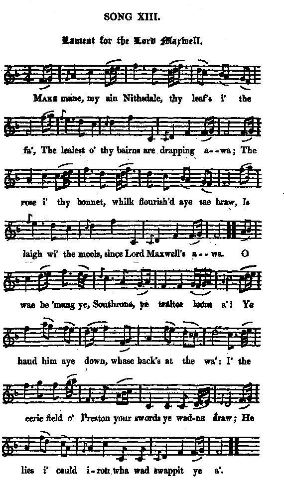
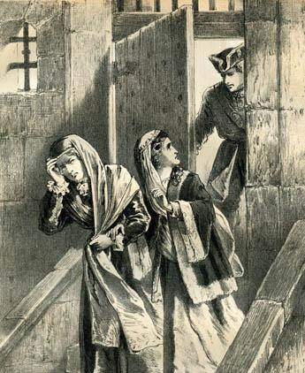
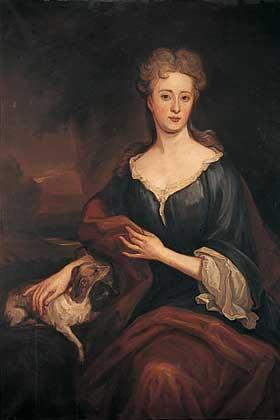
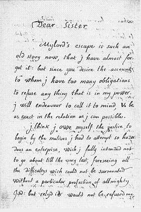

Lament for the Lord Maxwell
Déploration de Lord Maxwell
From "Remains of Nithsdale and Galloway song", page 132, 1810
Ascribed to Allan Cunningham by Gilbert S. McQuoid, in his "Jacobite Songs - 1888", page 493.Tune - Mélodie
"The yellow-haired Laddie"
version from Hogg's "Jacobite Relics" 2nd Series N°13, page 33, 1821
Sequenced by Christian Souchon

|
To the tune:
"This beautiful song, as well as the foregoing , is taken from Cromek. I say nothing about the antiquity of them, but am very glad that I have such vouchers as Allan Cunningham, and Cromek, for a matter which might appear to some rather equivocal. Let it be remembered, that I hold all posthumous confessions, which give the lie to the dead, as null and void. The notes to both songs are mostly copied from the same source." Source "Jacobite Relics, volume II, 1821" (cf. Links). Consequently this is one of the Jacobite poems in the "Remains" that should not be ascribed to Allan Cunningham. Hogg apparently ignores who composed the haunting melody to it (There are no tunes in the "Remains"). The melody, known as "The yellow-aired Laddie" , was very popular for quite some years: - It is named as vehicle for 3 songs in Allan Ramsay's instalments of his "Tea Table Miscellany" (c. 1724) and in his "Gentle Shepherd" (1725), it is set to the song "When first my dear Laddie gade to the green Hills". - The notated version appears in William McGibbon's "Scots Tunes" , book III, 1742, pg. 85, - and in William Napier's "Original Scots Songs" , vol. 1, 1790, pg. 66... Source: Andrew Kunz, "Fiddler's Companion (cf. Links). |
A propos de la mélodie:
"Ce beau chant, tout comme le précédent est tiré des "Remains" de Cromek. Je ne me prononcerai pas sur leur ancienneté. Mais je me félicite qu'Allan Cunningham et Cromek s'en portent garants, car c'est là un sujet qui prête fort à controverse. Dois-je rappeler que je tiens pour nulles et non avenues toutes les confessions posthumes tendant à imputer un mensonge à un mort. Les notes qui accompagnent les deux chants proviennent de la même source". Source "Jacobite Relics, volume II, 1821" (cf. Liens). Voilà donc un des chants Jacobites des "Remains" qu'il ne conviendrait pas d'attribuer à Allan Cunningham. Quant à la belle mélodie, Hogg n'en indique pas l'auteur ( et il n'y a pas de mélodies dans les "Remains"). La mélodie, intitulée "Le gars aux cheveux blonds" , a été en vogue pendant plusieurs années: - elle est citée comme timbre de 3 chants dans divers volumes des "Miscellanées de la table de thé" d'Allan Ramsay (c. 1724) et dans son "Gentle Shepherd" (1725), elle est associées à l'air "La première fois que mon aimé s'en fut dans les vertes collines". - la partition apparaît chez William Gibbon , dans ses "Airs écossais" , vol. III, 1742, pg. 85; - et chez William Napier, dans ses "Chants originaires d'Ecosse" , vol.1, 1790, pg.66... Source: Andrew Kunz, "Fiddler's Companion (cf. Liens). |
|
LAMENT FOR THE LORD MAXWELL
1. Make mane, my ain Nithsdale thy leaf's i' the fa', The lealest o' thy bairns are drapping awa; The rose i' thy bonnet, whilk fourish'd aye sae braw, Is laigh wi' the mools, since Lord Maxwell's awa. O wae be'mang ye, Southrons, ye traitor loons a'! Ye haud him aye down, whase back's at the wa': I' the eerie field o' Preston your swords ye wadna draw; He lies i' cauld iron wha wad swappit ye a'. 2. O wae be to the hand whilk drew nae the glaive, And cowed nae the rose frae the cap o' the brave! To hae thri'en 'mang the Southrons as Scotsmen aye thrave Or ta'en a bloody nievefu' o' fame to the grave. The glaive for my country I doughtna then wield, Or I'd cock'd up my bonnet wi' the best o' the field; The crousest should've been coupit owre i' death's gory fauld, Or the leal heart o' some i' the swaird should been cauld. 3. Fu' aughty simmer shoots o' the forest hae I seen, To the saddle-laps in blude i' the battle hae I been, But I never kend o' dule till I kend it yestreen. 0 that I were laid whare the sods are growing green! I tint half mysel when my gude lord I did tine: A heart half sae brave a braid belt will never bin', Nor the grassy sods e'er cover a bosom half sae kin'; He's a drap o' dearest blude i' this auld heart o' mine. 4. O merry was the lilting amang our ladies a', They danc'd i' the parlour, and sang i' the ha', O Charlie he's come o'er, and he'll put the Whigs awa; But they canna dight their tears now, sae fast do they fa'. Our ladie dow do nought now but wipe aye her een, Her heart's like to loup the gowd lace o' her gown; She has busked on her gay cleedin', an's aff for London town, And has wi' her a' the hearts o' the countrie roun'. 5. By the bud o' the leaf, by the rising o' the flower, 'Side the sang o' the birds, whare some burn tottles owre, I'll wander awa there, and big a wee bit bower, For to keep my gray head frae the drap o' the shower: And aye I'll sit and mane, till my blude stops wi' eild, For Nithsdale's bonny lord, wha was bauldest i' the field. O that I were wi' him i' death's gory fauld! O had I but the iron on whilk hauds him sae cauld ! Source: "The Jacobite Relics of Scotland, being the Songs, Airs and Legends of the Adherents to the House of Stuart", volume II, by Hogg, published in Edinburgh by William Blackwood in 1821. (*) This mention of Prince Charlie dates the song to the year 1745. It is not a lament for Lord Nithsdale's arrest but for his death in 1744 and over the disgrace that he should have been captured and tried like a criminal, instead of dying on the battlefield, as is seemly for a soldier. The poet who is 80 years of age was born in 1665. |
 Lord Maxwell's Evasion |
DEPLORATION DE LORD MAXWELL
1. O, vois comme tombe, Nithsdale, tout ce feuillage que l'automne a flétri! Voici que Dieu rappelle tes meilleurs fils à Lui! Et l'églantine à ton bonnet Qui lui conférait ses charmes ingénus, Dans la tombe s'abîme Car Lord Maxwell n'est plus. Malheur à vous, infâmes Anglais qui recourez aux ruses les plus basses, Tous vos chiens, le fauve les terrasse quand il est au mur acculé! Alors qu'à Preston nul ne voulût lever sur lui l'épée de la haine, Vous vous l'aviez chargé de chaînes: En duel il vous eût vaincus! 2. Oh, honte à l'indigne main qui ne tira point l'épée de son fourreau Pour trancher l'églantine au chapeau des héros! Elle a fleuri chez les Saxons, comme elle avait aussi fleuri chez les Scots, Cette poignée sanglante de gloire veut un tombeau. Si de brandir j'avais eu l'honneur, ma chère patrie, pour toi mon glaive, On aurait vu comme je relève ma coiffe, à l'instar des meilleurs. Les braves méritaient pourtant qu'au bercail sanglant la mort les accueille, Que sur le sol jonché de feuilles Cessent de battre leurs cœurs. 3. Quatre-vingts fois j'ai pu voir les arbres, l'été, dans la forêt verdir. Et souvent sur ma selle Le sang souilla le cuir. Pourtant jamais jusqu'à ce jour Je n'ai su vraiment ce que c'est que souffrir Que ne pus-je m'étendre Sur l'herbe pour mourir! Te perdant, mon maître, je ne suis Plus grand chose et je ne sais que geindre. Jamais baudrier ne saurait ceindre cœur plus brave ou plus aguerri! Ni les mottes d'herbes abriter sous leur vert linceul de corps plus aimable. Et c'est de son sang, misérable cœur, qu'on te voit saigner. 4. Entendez ces hymnes joyeux dont des gens heureux veulent se divertir! Dans les salons, ces rires, Retentir en tout lieu! C'est Charles qui s'en vient bouter les Whigs abhorrés hors de notre pays, (*) Et pourtant, que de larmes, verse-t-on aujourd'hui! Notre maitresse encore ne sait qu'essuyer ses yeux inondés de larmes. Ses dentelles vont sous l'alarme rompre tant le cœur lui bat fort. Elle met de précieux habits et la voilà qui va partir pour Londres. Ici tous les cœurs à la ronde accompagnent ses efforts. 5. Lorsque s'ouvriront les bourgeons, Et que fleuriront dans les prairies les fleurs, Tandis que l'eau ruisselle et chantent les pinsons, Pour braver l'hiver rigoureux, Protéger mes cheveux blancs de ses assauts je construirai la hutte Qui m'abrite de l'eau. Noble seigneur de Nithsdale, pour toi que l'on ne vit jamais fuir les batailles, Jusqu'à ce que mes forces s'en aillent Je clamerai mon désarroi. Ah! que ne m'a-t-il été donné de porter les fers de ton esclavage! Ou d'attendre la fin des âges Reposant à ton côté! (Trad. Christian Souchon (c) 2010) (*) Cette référence au Prince Charles date le poème de 1745. Cette "déploration" n'est pas celle de l'arrestation en 1716, mais de la mort en 1744 de Lord Nithsdale et de l'indignité d'avoir été capturé et jugé comme un criminel plutôt qu'être mort au champ d'honneur comme il sied à un soldat. Le poète, âgé de 80 ans doit donc être né en 1665. |
|
 In a Letter sent to her sister lady Lucy Herbert, abbess of the Augustine Nuns at Bruges, dated " Palais Royal de Rome, 16th April 1718", the Countess Winifred Nithsdale recounts how her husband William Maxwell "made his escape from the Tower, February 23, 1715, dressed in a woman's cloak and hood, which were for some time after called Nithsdales."It is a thrilling narrative, to be found in both Cromek's and Hogg's books. As it is very long, here is, instead, how the 1911 edition of the Encyclopaedia Britannica, sums it up: William Maxwell, 5th Earl of Nithsdale, Jacobite leader, (Born 1676 Died 1744), was a member of the family of Maxwell, being a son of Robert the 4th earl (d. 1696) and a collateral relation of Robert Maxwell (d. 1646) who was created Earl of Nithsdale in 1620. He became famous by his loyalty to the royalist tradition of his family, and by the heroism of his wife Winifred, daughter of William Herbert, 1st Marquess of Powis. After becoming earl in 1698 he served the exiled house of Stuart in secret, was suspected as a Jacobite conspirator, and was much molested on that account. In 1712 he resigned his estate to his son William (d. 1776), reserving a life rent to himself. When the Jacobite rising took place in 1715 he joined his friends in the north of England and was taken prisoner at Preston, being sent to London for trial. The countess of Nithsdale, who was at Terregles when she heard of the capture of her husband, followed him to London, making part of the journey on horseback in bitter winter weather. The earl and the other Jacobites were brought to trial in Westminster Hall on the 19th of January 1716, and condemned to death on the 9th of February. The execution was fixed for the 24th. The countess presented a petition to George I which he refused to receive, and when she knelt before him and took hold of the skirts of his coat he dragged her half across the room before he could break away. Finding that no pardon could be obtained the countess laid a plan to rescue her husband from the Tower of London. With the help of two Jacobite ladies, Mrs Morgan and Mrs Mills, she very cleverly extricated her husband from his cell on the night before the day fixed for the execution by disguising him as a woman. The earl escaped from England and was followed by the countess, but not till she had gone back to Scotland to rescue important legal papers which proved the transfer of the estate to their son. The earl and countess went to Rome after a short stay in France. In Rome they were attached to the court of the Pretender and lived in poverty and obscurity. The earl died on the 10th of March 1744, and the countess in 1749. Their son, William Maxwell, regained the possession of the family property after his father's death in 1744, since the government could only confiscate his father's life-interest; but the title was forfeited, and he died childless." (in fact, William Maxwell left a daughter named Winifred). |
 Dans une lettre adressée à sa sœur Lucie Herbert, abbesse des Augustines de Bruges, datée du "Palais royal de Rome" et du 16 avril 1718, la comtesse Winifed de Nithsdale raconte l'évasion de son mari, William Maxwell de la Tour de Londres, le 23 février 1715, déguisé en femme et portant la cape appelée depuis une "Nithsdale".C'est un récit passionnant que l'on trouvera chez Cromek et chez Hogg. Comme il est très long, il est remplacé ici par l'article de l'édition 1911 de l'Encyclopédie Britannique qui le résume comme suit: William Maxwell, 5ème comte de Nithsdale, chef Jacobite (né en 1676 et mort en 1744), était le fils de Robert Maxwell, 4ème comte de Nithsdale (décédé en 1646) qui prit ce titre en 1620. Il se fit remarquer par son attachement aux traditions royalistes de sa famille et par l'héroïsme de son épouse Winifred, fille de William Herbert, 1ère marquise de Powis. Après être devenu comte en 1698, il servit en secret les Stuarts exilés, fut soupçonné de conspiration Jacobite, ce qui lui causa beaucoup d'ennuis. En 1712, il légua ses biens à son fils William (décédé en 1776), se réservant une rente à vie pour lui-même. Quand eut lieu le soulèvement des Jacobites en 1715, il se joignit aux autres insurgés du nord de l'Angleterre et fut fait prisonnier à Preston et conduit à Londres pour y être jugé. La comtesse de Nithsdale qui était à Terregles quand elle apprit la nouvelle de l'arrestation de son mari, le suivit à Londres, faisant une partie du trajet à cheval au milieu de la neige et du froid. Le comte et les autres Jacobites furent déférés devant le tribunal de Westminster le 19 janvier 1716 et condamné à mort le 16 février. L'exécution était fixée au 24 janvier. La comtesse présenta un recours en grâce à Georges I qui refusa de la recevoir et quand elle s'agenouilla devant lui saisissant les bords de son manteau, il la traîna à travers la moitié de la pièce, avant de se libérer. Consciente que son époux ne serait jamais gracié, la comtesse ourdit un plan pour le faire sortir de la Tour de Londres. Avec l'aide de deux dames Jacobites, Mrs Morgan et Mrs Mills, elle parvint très adroitement à faire sortir son mari de sa cellule, la veille du jour fixé pour son exécution, en le déguisant en femme. Le comte partit d'Angleterre, suivi bientôt de sa femme, qui était auparavant retournée en Ecosse pour mettre en règle les papiers prouvant le transfert de leurs biens à leur fils. Le comte et la comtesse allèrent à Rome après un court séjour en France. A Rome ils furent attachés au service du Prétendant et vécurent dans un indigent anonymat. Le comte mourut le 10 mars 1744 et la comtesse en 1749. Leur fils, William Maxwell entra en possession de la propriété familiale après la mort de son père en 1744, puisque le gouvernement ne pouvait confisquer que l'usufruit de la rente de son père. Mais il fut déchu de son titre et mourut sans postérité." (En réalité, il eut une fille, prénommée Winifred). |
|
|
|